Sistema de Numeração consistem em quatro sistemas que são muito importantes para o curso técnico de informática, esses sistemas servem para representar uma quantidade de números apartir de uma posição.
Sistema Decimal
~>Possue uma representação de dez símbolos, vejamos a seguir.
0,1,2,3,4,5,6,7,8,9.
IMPORTANTE:
*Não deve-se contar a partir do número 1, mas sim do número 0, e por isso sempre o último dígito será 9 e não 10.
Sistema Binário
~>Possue uma representação de dois números apenas, 0 e 1,vejamos a seguir.
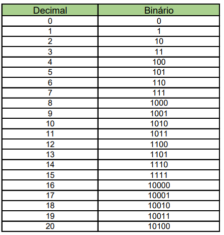
Conversões Decimal para Binário
~>Pega o número que está entre parênteses e divide por dois, e vai dividindo até que se obtenha o resto igual a (1).
Veja um exemplo do exercício abaixo:
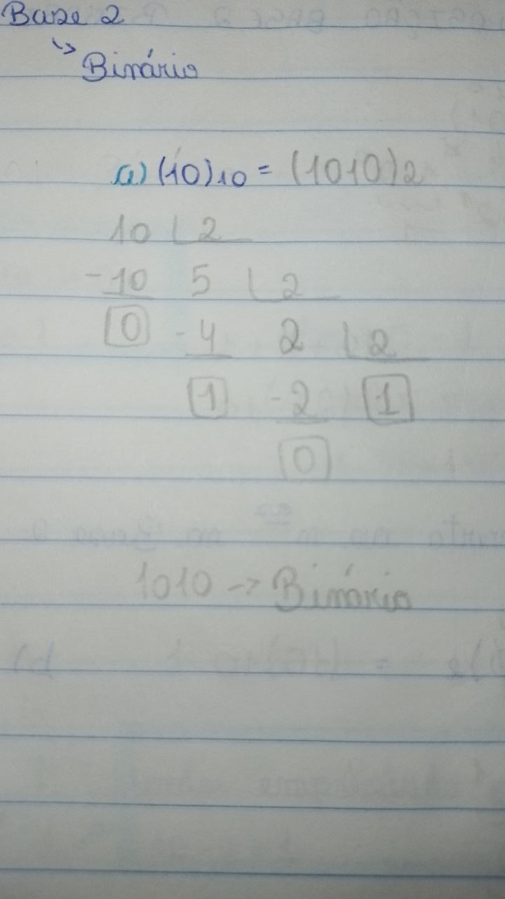
IMPORTANTE:Depois de realizar esse processo é só unir o que resta do final das divisões e juntar com o quociente da divisão.
Conversões dos Decimais
~>Separa-se os números por unidade e multiplicando-os por dez, e cada uma dessas multiplicações recebe um número para ser elevado a potência.
Veja um exemplo do exercício abaixo:
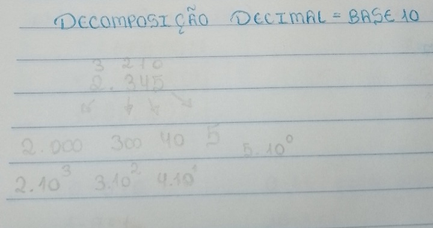
IMPORTANTE:
*Não deve-se contar a partir do número 1, mas sim do número 0, e por isso sempre o último dígito será 9 e não 10.Essa regra se estabelece igualmente na decomposição da base 10. As potências serão aderidas começando pelo 0.
Conversões Base 2 para Base 10
~>Faz o mesmo processo que fazemos na decomposição dos decimais,porém agora será multiplicado por 2, e no final terá que pegar os resultados das potências e somar tudo para obtermos um decimal.
Veja um exemplo do exercício abaixo:
Adição de Binários
~>Na adição tem que seguir a tabela.
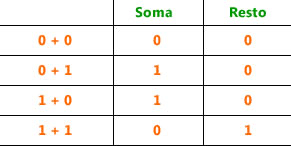
Veja um exemplo do exercício abaixo:
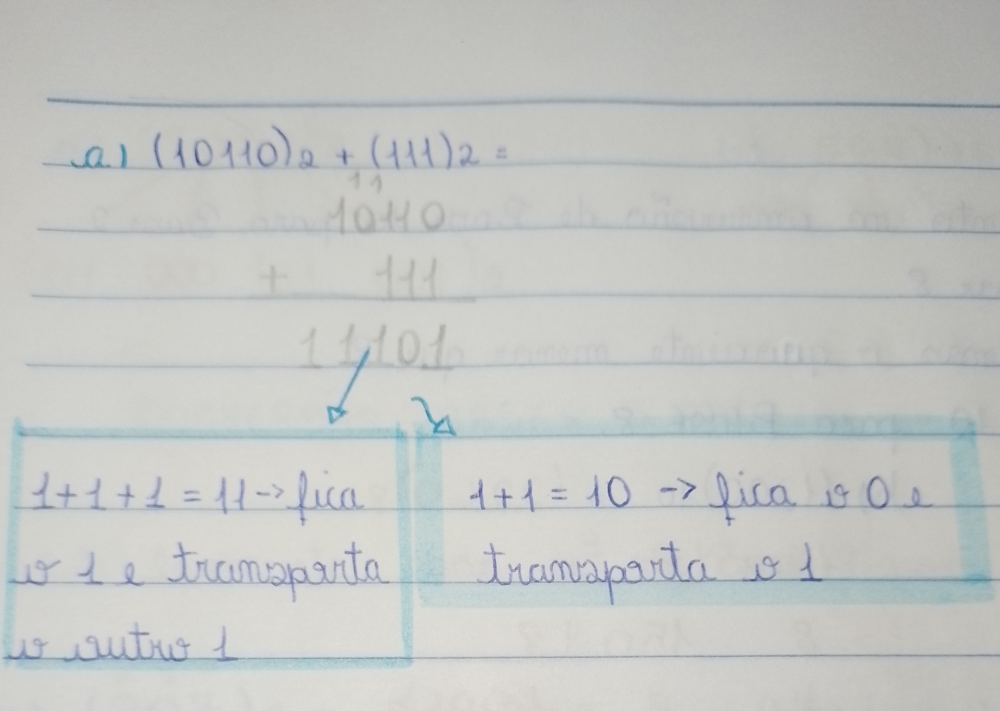
Subtração de Binários
~>Na subtração tem que seguir a tabela.
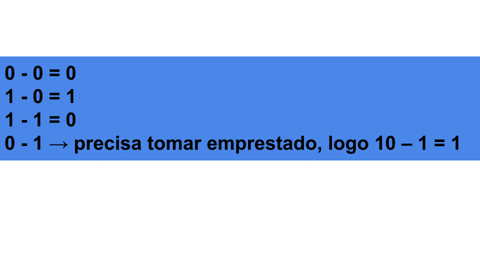
Veja um exemplo do exercício abaixo com explicações:
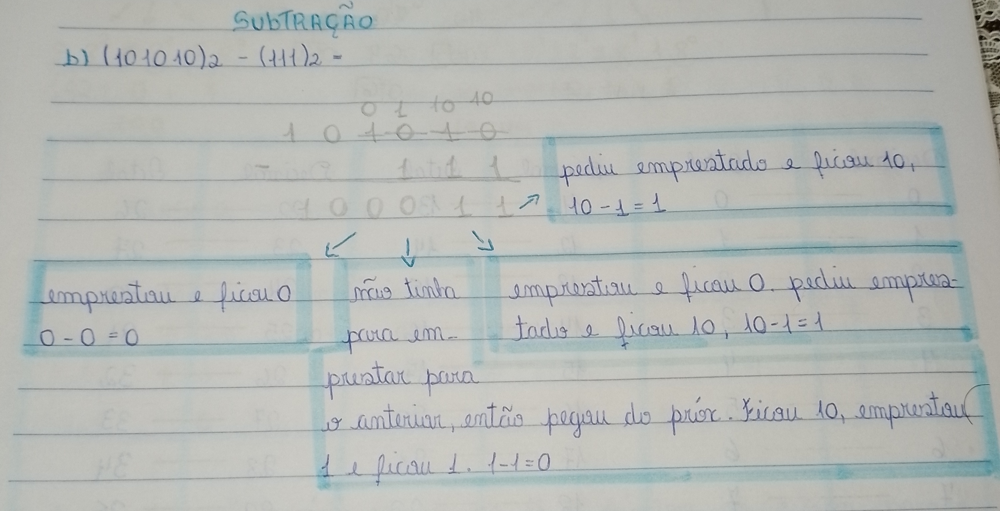
Sistema Octal
~>O sistema octal consiste na representação de números até o dígito 7 e iniciando-se com 0.
Sendo assim: 0,1,2,3,4,5,6,7.
E para facilitar na parte de notação o sistema octal tem uma tabela, que é dos decimais representados em octais.
A tabela já é auto explicativa,os números octais vão até o último dígito ser (7), exemplo na tabela a seguir;
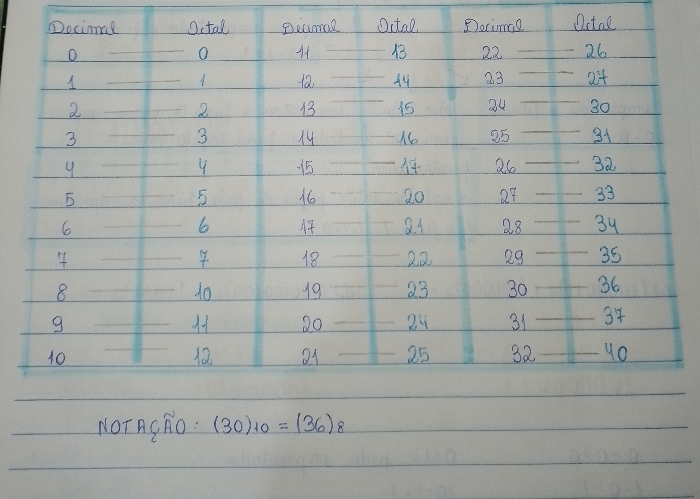
Conversões decimais para octais
~>Agora dividimos o número que está dentro do parênteses por 8 até que se obtenha o quociente (1), depois dizemos que o transformamos em um número octal.
Sendo assim, vejamos o exemplo a seguir;
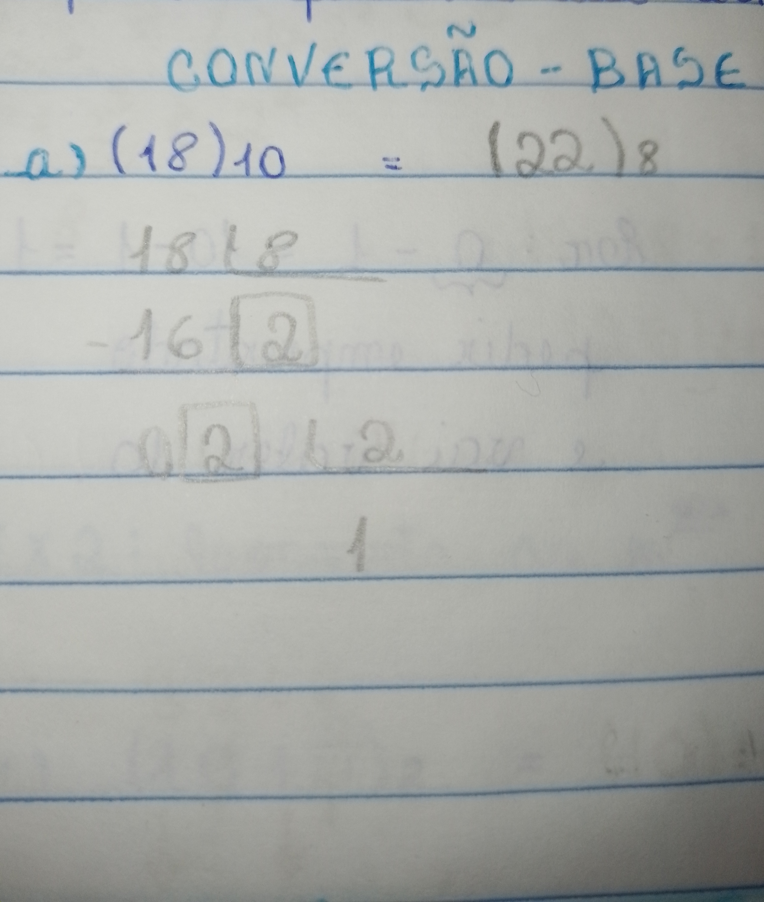
Conversão octal para decimal
~>Numera-se os números começando de zero e depois multiplicando-os por 8 com a potência que cada número recebeu de acordo com a sua ordem, e no final, soma tudo e teremos um número decimal.
Veja o exemplo a seguir de um exercício:
Conversão de Binário para Octal
~>Primeiro é importante ter a tabela de equivalência que facilita muito no entedimento.
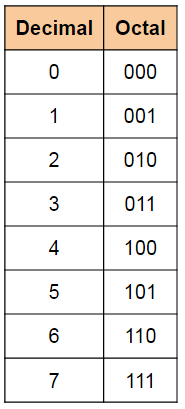
Breve explicação:Separa-se o número binário dado em três dígitos da direita para a esquerda, caso o número não tenha 3 dígitos acrescenta-se zeros à esquerda do número, para que dê certo na separação e na notação desse número. Por fim, substitui-se o número binário pelo octal correspondente da tabela.
Veja abaixo exemplos:
Conversão de Octal para Binário
~>Separa-se o número dado por unidade, ou seja, um por um, e com a mesma tabela que utilizamos para realizar a coversão de Binário para Octal, iremos substituir esse números que foram separados um por um, pelo número esquivalente da tabela.
Analise um exemplo a seguir:
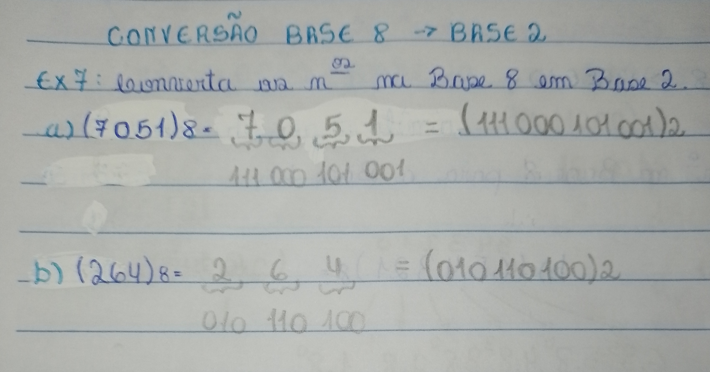
Sistema Hexadecimal
~>Os números nesse sistema são representados por 16 símbolos, dez algarismos e mais seis letras do alfabeto.
Tendo assim:0,1,2,3,4,5,6,7,8,9,A,B,C,D,E,F.
Veja a tabela a seguir que ajudará no conhecimento.
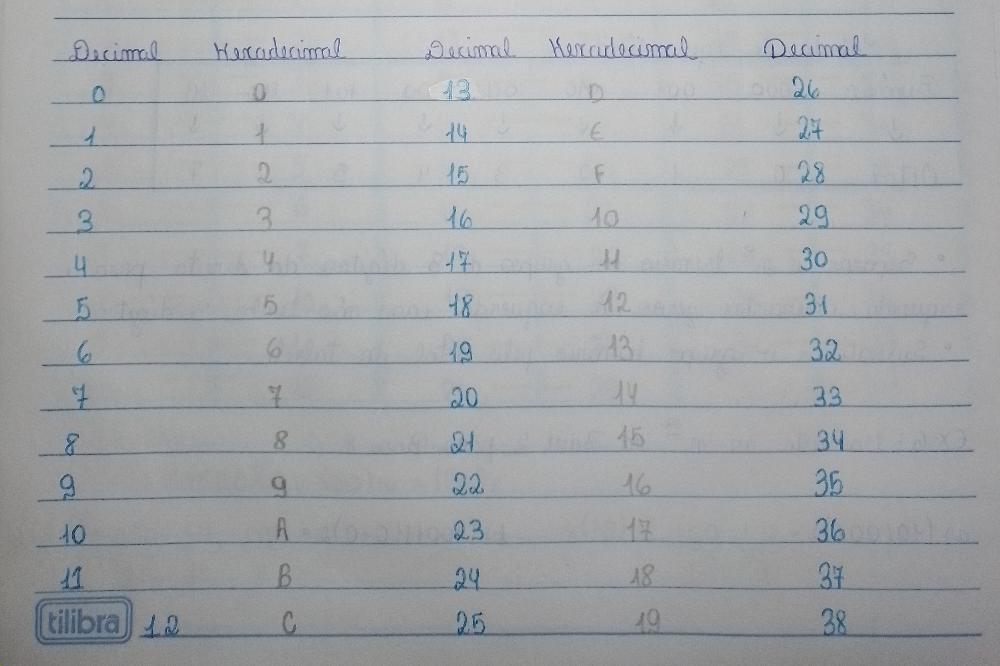
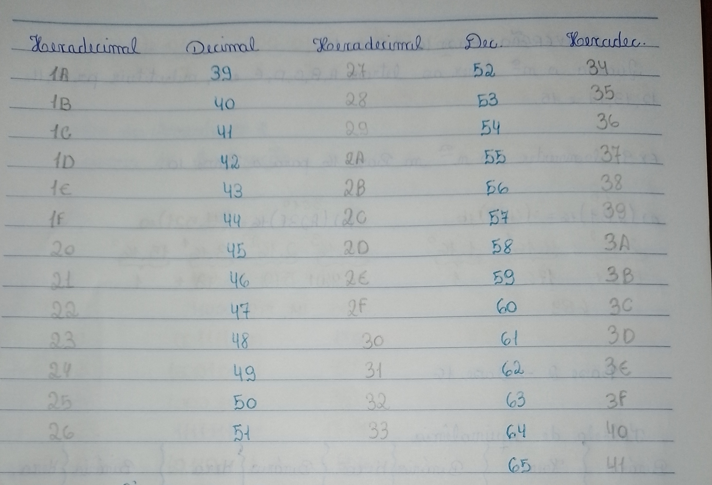
Conversão Decimal para Hexadecimal
~>Para coverter basta dividir o decimal por 16 até que se obtenha quociente (1), e com o resultado olhamos na tabela e o substituímos pelo correpondente.
Analise uns exemplos a seguir:
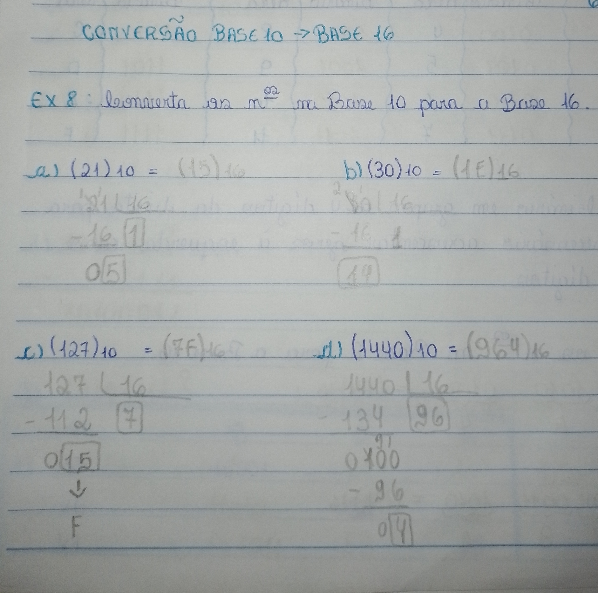
Conversão Hexadecimal para Decimal
~>Na conversão de hexa para decimal numera-se os números dados começando a partir de zero, depois multiplicando-os por 16 ne potência atribuída, assim obteremos um número decimal.
IMPORTANTE:Quando tivermos em alguma situação uma das letras A,B,C,D,E,ou F temos que substitur a letra pelo número correpondente da tabela dos decimais e hexadecimais mostrado acima.
Analise uns exemplos a seguir:
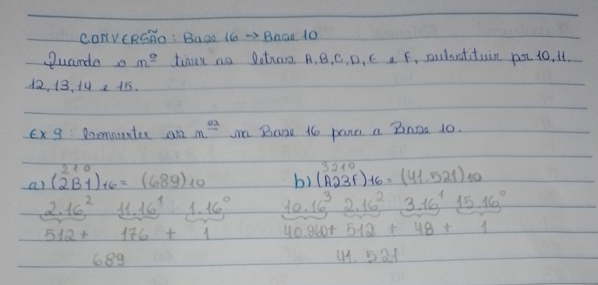
Conversão de Binários para Hexadecimal
Siga a tabela de equivalência abaixo para melhor entedimento.
Tabela de Conversão de Binário para Hexadecimal
<
<
Binário
Hexadecimal
<
0000
<
0
<
0001
1
0010
2
<
0011
3
0100
4
<
0101
5
0110
6
0111
7
<
1000
8
<
1001
9
<
1010
A
1011
B
1100
C
1101
D
1110
E
1111
F
Separa-se o n° binário em grupos de 4 dígitos da direita para esquerda.Se necessário acrescentar zeros á esquerda caso não se tenha os 4 dígitos.
Depois substituimos o número binário pelo correspondente da tabela, para virar os quatro dígitos.
Para finalizar com esse conteúdo, irei fazer um breve relato de como aprendi e quais métodos.
Senti muita dificuldade no conteúdo de adição e subtração dos binários, procurei por vídeos que explicassem,sites e até mesmo fui no horário de atendimento.Hoje eu entendo bem melhor, acredito que apresentei certa dificuldade pelo fato de ter ficado de atestado por conta de doença.